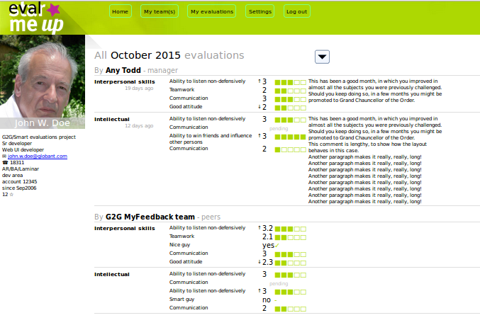

- Green header
Disregard, it's only a placeholder. The logo, the colors, and the menu, will be defined in other document.
Especially, the wording of the menu items is wrong.
Moreover, the branding should be easily replaceable by the client's.
- Left-hand column
The date items shown are taken grom the user model of the backend, and might change.
- G2G/Smart evaluations project
- Sr developer
- Web UI developer
- ✉ john.w.doe@globant.com
- ☎ 18311
- AR/BA/Laminar
- dev area
- account 12345
- since Sep2006
- 12 ☆
At the moment the properties (and their mapping) are:
private Integer id; private Language language; private Office office; [6] private String firstName; [name] private String lastName; [name] private String email; [4] private String job; [3] private String seniority; [2] private Integer profileImageId; [image] private boolean enabled; private String area; [7] private String account; [8] private String project; [1] private String phoneNumber; [5] private String orgEntryDate; [9] private Integer totalStars; [10] - All October 2015 evaluations
Clicking the dropdown icon to the right opens the filters popup (try it).
This title is built in the processing of the filters.
The word "All" is because of the "source" choice. The other sources translate into "My managers", "My team" and "My employees".
The "October 2015" part is so bacause the user chose the full month, so we avoid showing "from 01-10-2015 until 31-10-2015", instead the single word "October" makes it much easier to read.
Notice that "October 2015" is highlighted (as a few other labels below). This allows the user to scan the page very quickly, as those elements stop their eyes during the scan. Notice how the personal data, in the left-hand column, does not stand out and thus it does not interfere with the reading of the relevant parts.
- The "Select query period and sources" popup
The "since" and "until" sections are built to make it easier to choose the most likely periods: the previous month or the current one.
The selected options should reflect that likeliness, like for example id it's October 2nd. then offer the previous month.
The third options render the usual calendars bound to keyboard input fields more suitable for people that are keyboard-friendly (the calendars are for chubby women attempring to purchase cat chow online).
The "Source" part is pretty obvious. The default is "All", the most likely one.
When the page opens, it is already displaying the evaluations selected by the default options, to save the user the burden of requesting them explicitly, each time.
The Esc key must be binded to the [cancel] buttin, and the Enter key to yhe [go] button.
- "By Any Todd - manager" and "By G2G MyFeedback
team - peers"
This are, obviously, the who evaluated this guy. The team label is so because in the future this UI might need to handle multiple teams, cleanly.
The "G2G MyFeedback" part is the division of the company (G2G) and the project this guy is in.
The team evaluation has no date. The date in the manager evaluation might not be available in the model, don't worry.
- "Interpersonal skills" ...
This is a topic with its competences.
The chart part in this wireframe is made up of characters, not very suitable for values like the 3.2 that is below. Also the green should be replaced bt gray.
The text to the right is the optional comment.
The evaluation values have a textual value too. It is displayed when the mouse pointer hovers the graph (the green squares).
- Responsive
Notice that when the viewport is narrowed the elements move under (not ehe header's). .
Else, this layout leverages the width of the desktop screens to display as much evaluation data as possible in a single screen.
- Where to go from here
It is not shown, i have no idea yet.